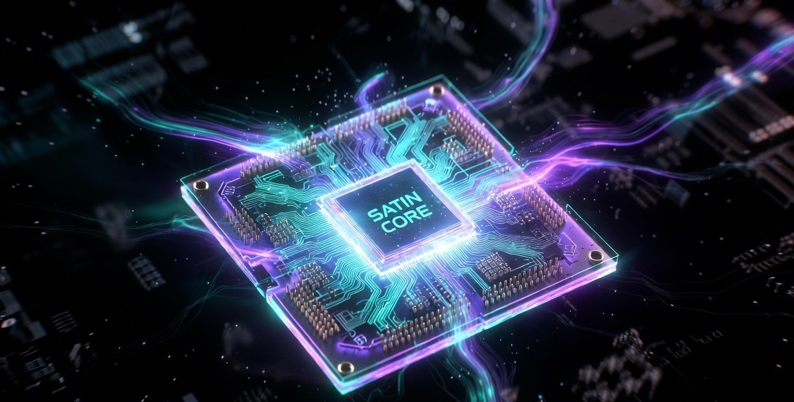
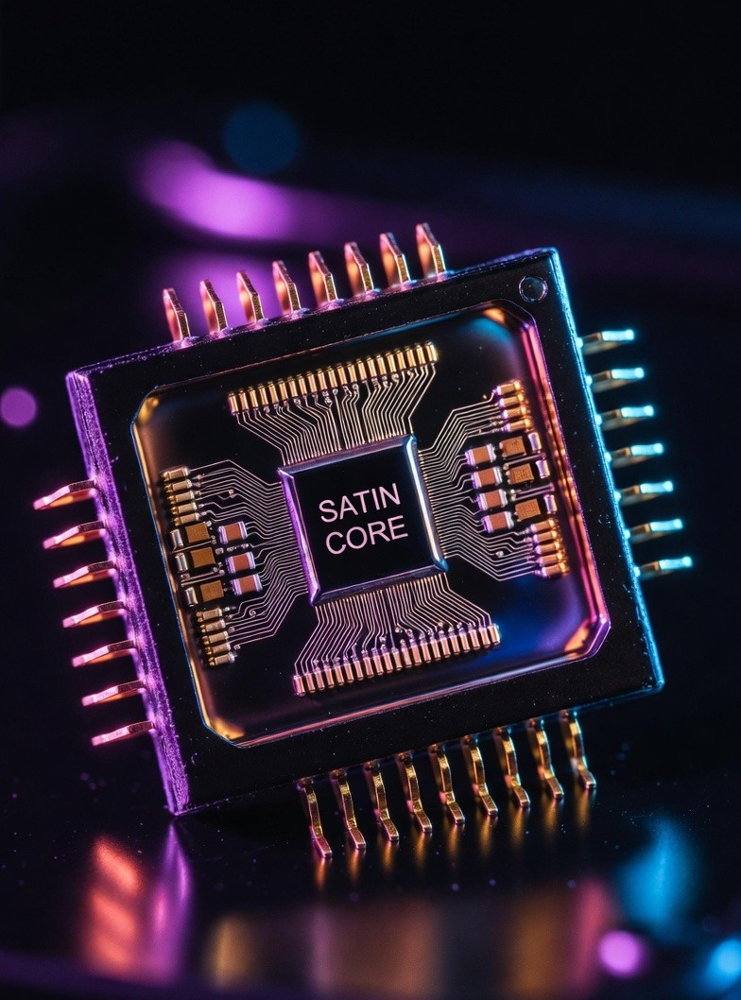

isa_upgrade_v1_to_v2() to convert a v0.1 binary to v2.0 format with safe defaults.
BYTE 0 1 2 3 4 5 6 7
┌─────────┬─────────┬─────────┬─────────┬─────────┴─────────┬─────────────────────────┐
│ OPCODE │ DST_ID │ SRC_A │ SRC_B │ SRC_C │ SCALAR_IMM [15:8] [7:0] │ HOST_ADDR [31:24] │
│ [7:0] │ [7:0] │ [7:0] │ [7:0] │ [7:0] │ [15:0] │ │
└─────────┴─────────┴─────────┴─────────┴─────────┴─────────────────────────┴─────────────────────────┘
BYTE 8 9 10 11 12 13 14 15
┌─────────────────────────────────────┬───────────────────────────────────────┬──────────┐
│ HOST_ADDR [23:16][15:8][7:0] │ SRAM_ADDR [31:24]..[7:0] │ BC[31:24]│
└─────────────────────────────────────┴───────────────────────────────────────┴──────────┘
▲ byte_count split
BYTE 16 17 18 19 20 21 22 23
┌───────────────────────┬──────────┬─────────────────┬─────────────────┐
│ BYTE_COUNT [23:0] │ AUX[7:0] │ TILE_M [15:0] │ TILE_N [15:0] │
│ [23:16][15:8][7:0] │ │ │ │
└───────────────────────┴──────────┴─────────────────┴─────────────────┘
BYTE 24 25 26 27 28 29 30 31
┌─────────────────┬──────────────────┬─────────────────┬─────────────────┐
│ TILE_K [15:0] │ HEAD_COUNT[15:0] │ CORE_MASK[15:0]│ RESERVED (=0) │
└─────────────────┴──────────────────┴─────────────────┴─────────────────┘
| Bits | Bytes | Width | Field | Description | v0.1? |
|---|---|---|---|---|---|
| [255:248] | [0] | 8 | opcode | Instruction opcode | v0.1 |
| [247:240] | [1] | 8 | dst_tile_id | Destination tile register (0–255) | v0.1 |
| [239:232] | [2] | 8 | src_a_id | Source tile A (0–255) | v0.1 |
| [231:224] | [3] | 8 | src_b_id | Source tile B (0–255) | v0.1 |
| [223:216] | [4] | 8 | src_c_id | Source tile C / accumulator (0–255) | v0.1 |
| [215:200] | [5:6] | 16 | scalar_imm | FP16 scalar immediate (e.g. scale factor) | v0.1 |
| [199:168] | [7:10] | 32 | host_addr | Host memory byte address (widened 16→32 bits) | v0.1* |
| [167:136] | [11:14] | 32 | sram_addr | SRAM/DRAM byte address (widened 16→32 bits) | v0.1* |
| [135:128] | [15] | 8 | byte_count[31:24] | byte_count high byte (split field) | v0.1* |
| [127:104] | [16:18] | 24 | byte_count[23:0] | byte_count low 3 bytes — combine with [15] → 32-bit | NEW v2.0 |
| [103:96] | [19] | 8 | aux_field | Axis / dtype / causal / precision mode flags | NEW v2.0 |
| [95:80] | [20:21] | 16 | tile_M | Runtime systolic M dimension (rows) | NEW v2.0 |
| [79:64] | [22:23] | 16 | tile_N | Runtime systolic N dimension (cols) | NEW v2.0 |
| [63:48] | [24:25] | 16 | tile_K | Runtime systolic K dimension (inner) | NEW v2.0 |
| [47:32] | [26:27] | 16 | head_count | Number of attention heads H | NEW v2.0 |
| [31:16] | [28:29] | 16 | core_mask | Bitmask: which of 8 cores execute this op | NEW v2.0 |
| [15:0] | [30:31] | 16 | reserved | Must be zero | — |
ISA2_GET_BYTE_COUNT() / ISA2_SET_BYTE_COUNT() macros — never access raw bytes directly.
| Opcode | Hex | Category | Operands | Description | Latency |
|---|---|---|---|---|---|
| NOP | 0x00 | CTRL | — | No operation | 1 |
| DMA_LOAD | 0x01 | DMA | dst, host_addr, sram_addr, byte_count | Host memory → SRAM/DRAM | 32+ |
| DMA_STORE | 0x02 | DMA | src, host_addr, sram_addr, byte_count | SRAM/DRAM → Host memory | 32+ |
| TILE_LOAD | 0x03 | DMA | dst, sram_addr | SRAM → Tile register | 4 |
| TILE_STORE | 0x04 | DMA | src, sram_addr | Tile register → SRAM | 4 |
| MATMUL_I8 | 0x10 | COMPUTE | dst, src_a, src_b [, src_c] | INT8 matrix multiply, saturating. src_c = accumulator (optional) | 64 |
| MATMUL_F16 | 0x11 | COMPUTE | dst, src_a, src_b [, src_c] | FP16 matrix multiply | 64 |
| TRANSPOSE | 0x12 | COMPUTE | dst, src_a | 2-D tile transpose | 4 |
| SCALE | 0x13 | COMPUTE | dst, src_a, scalar_imm | Per-element multiply by FP16 scalar_imm | 4 |
| RELU | 0x14 | COMPUTE | dst, src_a | ReLU activation: max(0, x) | 4 |
| GELU | 0x15 | COMPUTE | dst, src_a | GELU activation (tanh approximation) | 16 |
| SOFTMAX | 0x16 | COMPUTE | dst, src_a, aux[0]=axis | Softmax. aux[0]=0 → row-wise (axis=1), aux[0]=1 → col-wise | 64 |
| LAYERNORM | 0x17 | COMPUTE | dst, src_a, src_b=γ, src_c=β | Layer normalisation with learnable γ, β | 64 |
| ELEM_ADD | 0x18 | COMPUTE | dst, src_a, src_b | Element-wise addition | 4 |
| ELEM_MUL | 0x19 | COMPUTE | dst, src_a, src_b | Element-wise multiplication | 4 |
| CAST | 0x1A | COMPUTE | dst, src_a, aux[1:0]=dtype | Type cast. Target dtype in aux[1:0] | 4 |
| QUANTIZE | 0x1B | COMPUTE | dst, src_a, src_b=scale, src_c=zp | FP16 → INT8 quantize | 4 |
| DEQUANTIZE | 0x1C | COMPUTE | dst, src_a, src_b=scale, src_c=zp | INT8 → FP16 dequantize | 4 |
| ATTENTION | 0x20 | ATTN | dst, src_a=Q, src_b=K, src_c=V | Fused scaled dot-product attention (single head, standard) | 512 |
| TILE_ZERO | 0xFE | CTRL | dst | Zero a tile register | 1 |
| HALT | 0xFF | CTRL | aux=halt_status | Halt execution. halt_status=0x00 = OK, 0xEx = fault | 1 |
| Opcode | Hex | Category | Key Fields | Description | Latency (cycles) |
|---|---|---|---|---|---|
| FLASH_ATTN | 0x30 | ATTN | dst,Q,K,V; tile_M=S, tile_N=D, tile_K=H; aux: causal, GQA; core_mask | FlashAttention-2. No S×S materialisation. O(B×D) SRAM. Block size B=64. | 512+ |
| KV_APPEND | 0x31 | ATTN | src_a=K, src_b=V; aux[0]=is_last_layer | Append K,V vectors to KV cache at current position. Advance pos when is_last_layer=1. | 200 |
| EMBED_LOOKUP | 0x32 | DMA | dst, src_a=token_ids; sram_addr=table_base; tile_M=T, tile_N=E | Token embedding fetch. T token IDs → [T, E] FP16 tile. T ≤ 256. | 1200 |
| GATHER | 0x33 | COMPUTE | dst, src_a=src, indices embedded in instruction | Index gather: dst[i,j] = src[indices[i,j], j]. Row-wise. Used for MoE routing. | 4 |
| SCATTER | 0x34 | COMPUTE | dst, src_a=src, indices; tile_M=out_size | Index scatter: dst[indices[i,j], j] += src[i,j]. Atomic add. | 4 |
| ROPE_ENCODE | 0x35 | COMPUTE | dst, src_a; scalar_imm=pos_offset; tile_N=head_dim | Rotary Position Encoding in-place. θ_i = 1/10000^(2i/D). LUT-accelerated. | 256 |
| BARRIER | 0x36 | CTRL | — | Memory fence. Stall until all in-flight DRAM operations complete. | 1–N |
| LOOP_BEGIN | 0x37 | CTRL | tile_M=count | Start counted loop. count in tile_M field. Stack depth = 4 max. | 1 |
| LOOP_END | 0x38 | CTRL | — | Decrement loop counter. Jump to matching LOOP_BEGIN if counter > 0. | 1 |
| BF16_CAST | 0x39 | COMPUTE | dst, src_a; aux[1:0]=dtype | Cast to/from BFloat16. Round-to-nearest-even. | 4 |
| SPARSE_MATMUL | 0x3A | COMPUTE | dst, src_a=lhs, src_b=rhs_values, src_c=rhs_meta; aux[2]=sparse_mode; core_mask | 2:4 structured sparse matmul. 2× effective throughput. Hardware decompress. | 32 |
| FP8_CAST | 0x3B | COMPUTE | dst, src_a; aux[4:3]=fp8_format_pair | Cast to/from FP8 E4M3 or E5M2. Clamp to ±448. | 4 |
| INT4_PACK | 0x3C | COMPUTE | dst, src_a | Pack INT8[-8,+7] → INT4 (2 values per byte, low nibble first). | 4 |
| INT4_UNPACK | 0x3D | COMPUTE | dst, src_a | Unpack INT4 → INT8. Sign extension via two's complement. | 4 |
| CERT_HASH | 0x3E | CTRL | dst, src_a=tile; cycle_count (auto), model_hash (pre-loaded) | SHA-256 of output tile → cert_register. Tamper-proof. 64-cycle latency. | 64 |
| MULTI_HEAD_ATTN | 0x3F | ATTN | dst, Q, K, V; tile_M=S, tile_N=D, head_count=H; aux: causal, GQA; core_mask | Full multi-head / GQA attention. Dispatches to FlashAttn when S > 1024. | 512+ |
| PREFETCH | 0x40 | DMA | host_addr, sram_addr, byte_count | Fire-and-forget prefetch hint. Non-blocking. No ordering guarantee. | 1 |
| MATMUL_BF16 | 0x41 | COMPUTE | dst, src_a, src_b [, src_c]; tile_M,N,K; core_mask | BF16 matrix multiply. Accumulate in FP32, output BF16. | 64 |
| MATMUL_FP8 | 0x42 | COMPUTE | dst, src_a, src_b; aux[4:3]=fp8_pair; tile_M,N,K; core_mask | FP8 matrix multiply. E4M3×E4M3 or E5M2×E4M3. Output FP16. | 64 |
| MATMUL_I4 | 0x43 | COMPUTE | dst, src_a, src_b; tile_M,N,K; core_mask | INT4 matrix multiply (packed inputs). 2× memory bandwidth vs INT8. | 32 |
| Opcode | Hex | Category | Description | SKU |
|---|---|---|---|---|
| MATMUL_BWD_W | 0x44 | TRAIN | Weight gradient: dW = dOut^T × Input | Server + Laptop |
| MATMUL_BWD_X | 0x45 | TRAIN | Input gradient: dX = dOut × W^T | Server + Laptop |
| RELU_BWD | 0x46 | TRAIN | ReLU backward pass | Server + Laptop |
| GELU_BWD | 0x47 | TRAIN | GELU backward pass | Server + Laptop |
| LAYERNORM_BWD | 0x48 | TRAIN | LayerNorm backward pass | Server + Laptop |
| SOFTMAX_BWD | 0x49 | TRAIN | Softmax backward pass | Server + Laptop |
| ADAM_UPDATE | 0x50 | OPTIM | Fused Adam optimizer with bias correction (Server) | Server only |
| ADAM_LITE | 0x51 | OPTIM | Simplified Adam for LoRA — no m/v state | Server + Laptop |
| SGD_UPDATE | 0x52 | OPTIM | SGD with momentum | Server + Laptop |
| GRAD_CLIP | 0x53 | OPTIM | Global gradient norm clipping (L2) | Server + Laptop |
| GRAD_SCALE | 0x54 | OPTIM | Loss scaling for AMP (automatic mixed precision) | Server + Laptop |
| ALLREDUCE | 0x58 | MULTI | Ring-allreduce via SATIN-LINK (gradient sync) | Server only |
| ALLGATHER | 0x59 | MULTI | All-gather for tensor parallelism | Server only |
| REDUCE_SCATTER | 0x5A | MULTI | Reduce-scatter for ZeRO stage 2/3 | Server only |
| CLU FAMILY | 0x60–0x62 | CLU ★ | ⬛ Hardware Continual Learning — Patent Pending (Indian Patent Office, Priority Date: 08 March 2026). Full opcode details disclosed post grant. | Server + Laptop |
| NEURO_ATTN | 0x63 | ATTN | O(n log n) sparse attention via locality-sensitive hashing | Server + Laptop |
| NEURO_ROUTE | 0x64 | ATTN | Compute NeuroAttn routing table (hash buckets) | Server + Laptop |
| GELU_LINEAR_FUSED | 0x65 | FUSED | Fused GELU(MatMul(A,B)) — ~40% bandwidth saving, no intermediate tile write | Server + Laptop |
| LAYERNORM_LIN_FUSED | 0x66 | FUSED | Fused LN(MatMul(A,B)) — ~35% bandwidth saving, fused LN post-MMA | Server + Laptop |
| ATTN_PROJ_FUSED | 0x67 | FUSED | Fused FlashAttn + Output projection — ~50% bandwidth saving, full attention head in one op | Server only |
| SWIGLU_FUSED | 0x68 | FUSED | SwiGLU(x, gate) — ~40% bandwidth saving. LLaMA 3 / Mistral FFN. Accumulator → activation, no SRAM hop. | Server + Laptop |
| Constant | Value | Opcode(s) | Meaning |
|---|---|---|---|
| Precision / Cast Target (aux[1:0]) | |||
| AUX2_DTYPE_INT8 | 0x00 | CAST, MATMUL_* | INT8 |
| AUX2_DTYPE_FP16 | 0x01 | CAST, MATMUL_* | FP16 |
| AUX2_DTYPE_BF16 | 0x02 | BF16_CAST | BFloat16 |
| AUX2_DTYPE_FP8_E4M3 | 0x03 | FP8_CAST | FP8 E4M3 |
| AUX2_DTYPE_FP8_E5M2 | 0x04 | FP8_CAST | FP8 E5M2 |
| AUX2_DTYPE_INT4 | 0x05 | INT4_PACK | INT4 |
| AUX2_DTYPE_FP32 | 0x06 | CAST | FP32 (accumulator read-out only) |
| Softmax Axis (aux[0]) | |||
| AUX2_SOFTMAX_AXIS_ROW | 0x00 | SOFTMAX | axis=1 (row-wise, standard) |
| AUX2_SOFTMAX_AXIS_COL | 0x01 | SOFTMAX | axis=0 (col-wise) |
| Constant | Value | Opcode(s) | Meaning |
|---|---|---|---|
| Attention Mode (aux[1:0]) | |||
| AUX2_ATTN_BIDIRECTIONAL | 0x00 | FLASH_ATTN, MHA | Encoder — no causal mask |
| AUX2_ATTN_CAUSAL | 0x01 | FLASH_ATTN, MHA | Decoder — causal mask (j > i → −∞) |
| AUX2_ATTN_GQA | 0x02 | FLASH_ATTN, MHA | Grouped-Query Attention (LLaMA 3 style) |
| Sparsity (aux[2]) | |||
| AUX2_SPARSE_NONE | 0x00 | SPARSE_MATMUL | Dense matmul |
| AUX2_SPARSE_2_4 | 0x04 | SPARSE_MATMUL | 2:4 structured sparsity (2× throughput) |
| FP8 Format Pair (aux[4:3]) | |||
| AUX2_FP8_E4M3_E4M3 | 0x00 | FP8_CAST, MATMUL_FP8 | Both operands E4M3 |
| AUX2_FP8_E5M2_E4M3 | 0x08 | FP8_CAST, MATMUL_FP8 | Activation E5M2, weight E4M3 |
| AUX2_FP8_E4M3_E5M2 | 0x10 | FP8_CAST, MATMUL_FP8 | Activation E4M3, weight E5M2 |
| Constant | Code | Description | Recovery |
|---|---|---|---|
| HALT_STATUS_OK | 0x00 | Normal halt — program completed successfully | None needed |
| FAULT_OOB_SRAM | 0xE0 | SRAM address out of bounds | Check sram_addr + byte_count ≤ SRAM_SIZE |
| FAULT_OOB_HOST | 0xE1 | Host address out of bounds | Check host_addr range |
| FAULT_BAD_OPCODE | 0xE2 | Unrecognised opcode byte | Verify instruction encoding |
| FAULT_DTYPE_MISMATCH | 0xE3 | Operand dtypes incompatible (e.g. INT8 + FP16) | Insert CAST before op |
| FAULT_OOB_TILE_ID | 0xE4 | Tile register index ≥ NUM_TILES (256) | Check tile ID allocation |
| FAULT_LOOP_OVERFLOW | 0xE5 | Nested LOOP_BEGIN exceeds stack depth (max 4) | Reduce loop nesting |
| FAULT_LOOP_UNDERFLOW | 0xE6 | LOOP_END without matching LOOP_BEGIN | Fix loop structure |
| FAULT_BARRIER_TIMEOUT | 0xE7 | BARRIER wait exceeded max cycles | Check DRAM latency / deadlock |
| FAULT_DRAM_ECC | 0xE8 | Uncorrectable DRAM ECC error | Hardware fault — replace module |
| FAULT_CERT_TAMPER | 0xE9 | cert_register tamper detected | Security violation — halt system |
| FAULT_CORE_MASK_ZERO | 0xEA | core_mask = 0x0000 on a multi-core op | Set at least one core bit in core_mask |
isa_packet_v2.h. Never access raw bytes directly for multi-byte fields.
The first custom AI accelerator chip from SATIN Core, built from the ground up to run transformer workloads with maximum efficiency. Featuring a 256-bit instruction word, 8-core systolic array, and native Flash Attention support.
Designed with a fully custom ISA (v3.0), 64 opcodes, and full backward compatibility with v0.1 programs — the S1 is engineered for production AI inference and training at scale.
| Field | v0.1 | v2.0 | Notes |
|---|---|---|---|
| Instruction width | 128 bits (16 bytes) | 256 bits (32 bytes) | Lower 16 bytes zero in v0.1 programs |
| host_addr | 16-bit | 32-bit | Zero-extended. Max 4 GB addressable. |
| sram_addr | 16-bit | 32-bit | Zero-extended. |
| byte_count | 16-bit | 32-bit | Split across bytes [15] and [16:18]. Use macros. |
| tile registers | 0–31 (5-bit) | 0–255 (8-bit) | v0.1 programs use IDs 0–31 only. |
| core_mask | N/A | 0x0001 default | v0.1 ops run on core 0 only when upgraded. |
| tile_M/N/K | N/A | 256 default | isa_upgrade_v1_to_v2() sets SATIN_DEFAULT_TILE_* = 256. |
| Opcode values | 0x00–0x20, 0xFE, 0xFF | Same + 0x30–0x43 | No re-use of existing opcode numbers. |
isa_upgrade_v1_to_v2(dst, src_v1_raw) for each 16-byte v0.1 instruction.
The output is a valid 32-byte v2.0 packet that runs on Gen 3 hardware identically to the original v0.1 program.